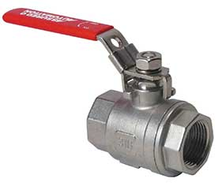

Threaded connections are very common. They provide a compact and streamlined connection between the valve and pipe.
The valve typically has female threaded end connections, into which the male threaded pipe fits. There are valves with male threaded connections as well, and even valves with one female end and one male end. Threaded connections must adhere to a standard in order to be useful in industry. There are a few different standards that exist. The valve and pipe must both be created using the same standard in order for them to make a proper connection.
There are standards for straight threads and some for tapered. Tapered threads provide a fluid tight seal without the use of a soft seal like an o-ring or flat washer. Straight threads do require a soft seal that gets compressed between the valve and pipe, hose, or fitting that they are being connected to.
Threaded valves are particularly popular in valves with a nominal diameter of 50mm or less (DN50). If the size is too large, it is very difficult to install and seal the connecting parts.